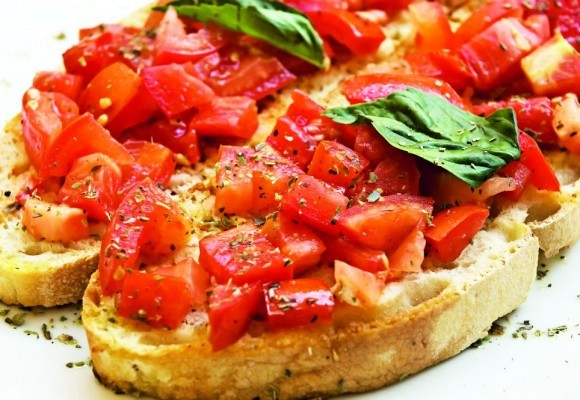

BRUSCHETE CU ROȘII ȘI BUSUIOC

INGREDIENTE
- rosii
- felii de paine(bagheta)
- busuioc(prospat sau uscat)
- ustoroi
- ulei
- sare
- piper
Mod de preparere
- Pâinea se feliază și se unge cu un cățel de usturoi.
- Se unge după gust, mai mult sau mai puțin, pe o parte sau pe amândouă.
- De asemenea, usturoiul se poate pisa mărunt și presăra peste feliile de păine.
- Se picură puțin ulei de măsline.
- După ce s-au uns, feliile de pâine sau baghetă se rumenesc la cuptor pănă devin aurii.
- Se taie roşiile cubuleţe si se pun intr-un bol.
- Se adauga busuiocul peste rosii,apoi se condimenteaza cu sare, piper si ulei dupa gust.
- Compozitia se aduga apoi pe feliile de paine rumenite.
- Suplimentar se poate adauga si putina branza rasa sau parmezan peste.
- Si bruschetele sunt gata, se pot servi ca o gustare usoara dar si ca un mic dejun copios.
Calorii/100g
Intr-o portie de 100g de bruschete se gasesc: 210kcal